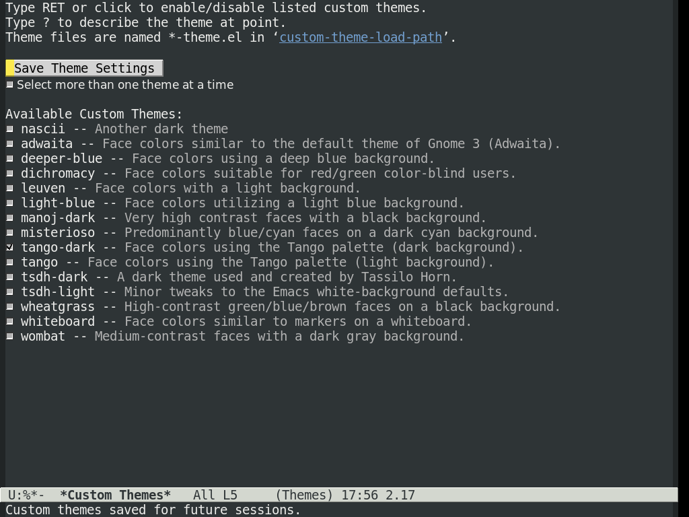
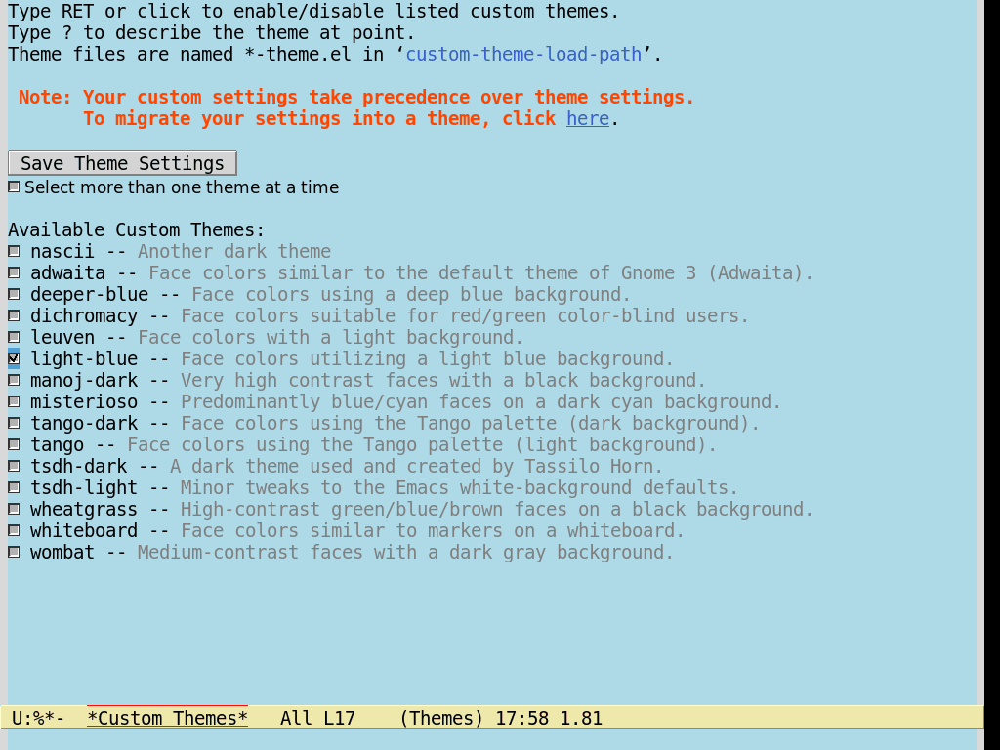
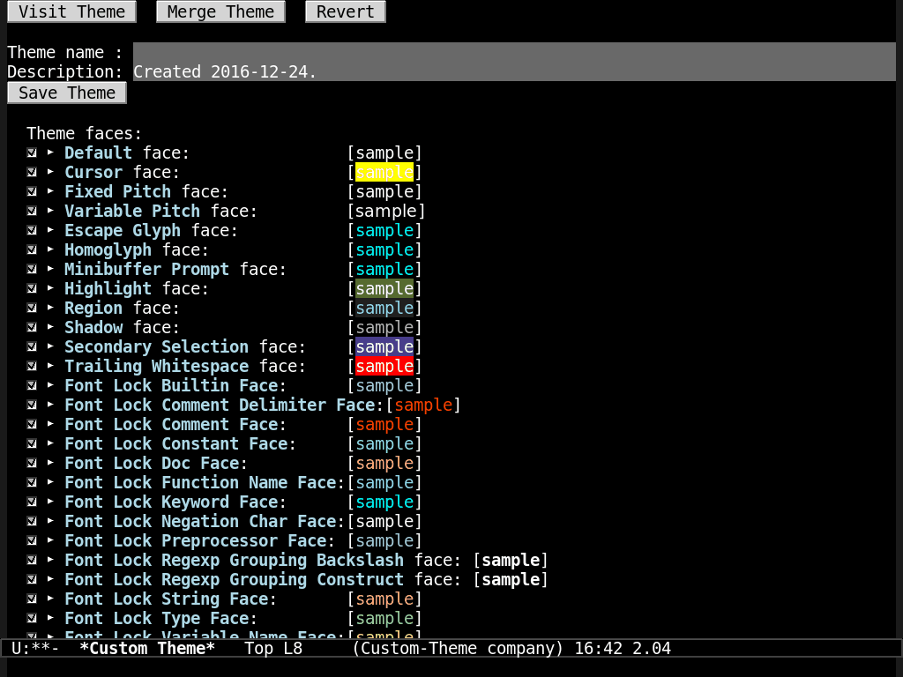
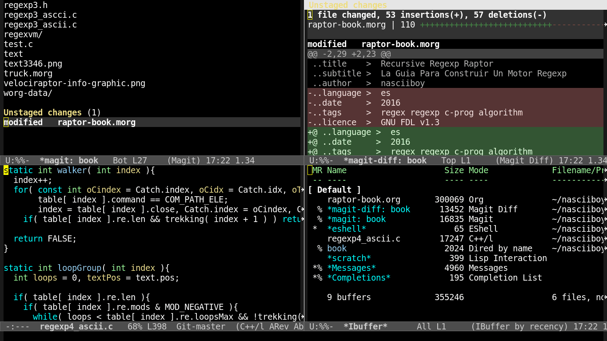

first theme
Crear un Tema en Emacs
un poco de historia
Cuando comence a utilizar emacs (hace unos pocos años) para establecer un tema
se utilizaba un paquete llamado color-theme parte del paquete
emacs-goodies-el de Debian. Al parecer desde la version 24 de emacs se
desaconseja su uso, pese a todo en mi instalacion se mantuvo en servicio hasta
la version 26.0.50 sin generar inconvenientes.
para la posteridad y los viajeros en el tiempo, dejo aqui el paquete en forma
de zip (con un tema personalizado de regalo
color-theme-nascii)
asi es como se utilizaba
(add-to-list 'load-path "~/ruta-a/color-theme-6.6.0")
(require 'color-theme)
(color-theme-initialize)
;; para cargar un tema en especifico
;; (color-theme-nombreDelTema)
(color-theme-nascii)
establecer el tema por defecto
apartir de emacs version 24 podemos cambiar el tema sin instalar nada con el
comando customize-themes

para cambiar el tema se mueve el cursor al tema y se presiona enter

para guardar el cambio colocamos el cursor en el “boton” Save Theme
Setting + un enter, accion que colocara automagicamente unas lineas de codigo
extra en nuestro init.el.
No te van las cosas automagicas? puedes establecer la carga de un tema
directamente en el fichero de configuracion init.el con
(load-file "~/RUTA/A/miTema-theme.el")
Si queremos que el menu de seleccion cargue un tema automaticamente, tiene que
estar en nuestro directorio de configuracion ~/.emacs.d/nombreTema-theme.el
crear un tema
Los temas se crean en base a la configuracion actual, pero tambien podemos crear
un tema a partir de cero segun indiquemos al comando customize-create-theme.

en el recuadro Theme Name damos nombre al tema, en el recuandro
Description dejamos la fecha de creacion o en su lugar colocamos una
descripcion del tema, por ejemplo "nascii-theme un tema obscuro mas..."
establecemos las variables a gusto y guardamos el tema con C-x C-s o con un
intro sobre el recuadro Save Theme. Regresamos a customize-themes y
automagicamente nuestro tema estara disponible.
Nota: Si creamos el tema apartir de la configuracion actual y queremos compartirlo con los demas habitantes de la red, debemos evitar incluir algunas variables especificas de nuestro sistema en el codigo fuente del tema, por ejemplo, el tipo de tipografia.
ver los cambios “al vuelo”
Vamos al codigo fuente del tema C-x C-f ~/.emacs.d/miTema-theme.el,
modificamos el parametro de interes (los colorines se encuentran entre comillas
en formato nombre o en formato hexadecimal de 3 o 6 digitos), luego evaluamos el
buffer con el comando eval-buffer.
Para hacer un poco menos lioso el asunto asignamos eval-buffer a una tecla
(global-set-key [f9] 'eval-buffer)
con esto tenemos asignado el comando a la tecla de funcion F9, asi podemos recargar los cambios estilo navegador web.
nascii-theme

;; This program is free software; you can redistribute it and/or modify
;; it under the terms of the GNU General Public License as published by
;; the Free Software Foundation, either version 3 of the License, or
;; (at your option) any later version.
;; This program is distributed in the hope that it will be useful,
;; but WITHOUT ANY WARRANTY; without even the implied warranty of
;; MERCHANTABILITY or FITNESS FOR A PARTICULAR PURPOSE. See the
;; GNU General Public License for more details.
;; You should have received a copy of the GNU General Public License
;; along with this program. If not, see <http://www.gnu.org/licenses/>.
;; ---------------------------
;;
;; nascii: Another dark theme
;;
;; ----------------------------
(unless (>= emacs-major-version 24)
(error "requires Emacs 24 or later."))
(deftheme nascii
"Another dark theme")
(custom-theme-set-faces
'nascii
'(default ((t (:weight normal :slant normal :underline nil :overline nil :strike-through nil :foreground "white" :background "black" :stipple nil :inherit nil))))
'(cursor ((t (:background "yellow"))))
'(escape-glyph ((((background dark)) (:foreground "cyan")) (((type pc)) (:foreground "magenta")) (t (:foreground "brown"))))
'(minibuffer-prompt ((((background dark)) (:foreground "cyan")) (((type pc)) (:foreground "magenta")) (t (:foreground "medium blue"))))
'(highlight ((t (:background "darkolivegreen"))))
'(region ((t (:background "#222" :foreground "#87cefa"))))
'(shadow ((((class color grayscale) (min-colors 88) (background light)) (:foreground "grey50")) (((class color grayscale) (min-colors 88) (background dark)) (:foreground "grey70")) (((class color) (min-colors 8) (background light)) (:foreground "green")) (((class color) (min-colors 8) (background dark)) (:foreground "yellow"))))
'(secondary-selection ((t (:background "darkslateblue"))))
'(trailing-whitespace ((t (:background "red"))))
'(font-lock-builtin-face ((t (:foreground "LightSteelBlue"))))
'(font-lock-comment-delimiter-face ((default (:inherit (font-lock-comment-face)))))
'(font-lock-comment-face ((t (:foreground "OrangeRed"))))
'(font-lock-constant-face ((t (:foreground "Aquamarine"))))
'(font-lock-doc-face ((t (:foreground "LightSalmon"))))
'(font-lock-function-name-face ((t (:foreground "LightSkyBlue"))))
'(font-lock-keyword-face ((t (:foreground "Cyan"))))
'(font-lock-negation-char-face ((t nil)))
'(font-lock-preprocessor-face ((t (:inherit (font-lock-builtin-face)))))
'(font-lock-regexp-grouping-backslash ((t (:inherit (bold)))))
'(font-lock-regexp-grouping-construct ((t (:inherit (bold)))))
'(font-lock-string-face ((t (:foreground "LightSalmon"))))
'(font-lock-type-face ((t (:foreground "PaleGreen"))))
'(font-lock-variable-name-face ((t (:foreground "LightGoldenrod"))))
'(font-lock-warning-face ((t (:weight bold :foreground "Pink"))))
'(button ((t (:inherit (link)))))
'(link ((((class color) (min-colors 88) (background light)) (:underline (:color foreground-color :style line) :foreground "RoyalBlue3")) (((class color) (background light)) (:underline (:color foreground-color :style line) :foreground "blue")) (((class color) (min-colors 88) (background dark)) (:underline (:color foreground-color :style line) :foreground "cyan1")) (((class color) (background dark)) (:underline (:color foreground-color :style line) :foreground "cyan")) (t (:inherit (underline)))))
'(link-visited ((default (:inherit (link))) (((class color) (background light)) (:foreground "magenta4")) (((class color) (background dark)) (:foreground "violet"))))
'(fringe ((t (:background "grey10"))))
'(header-line ((t (:box nil :foreground "grey20" :background "grey90"))))
'(tooltip ((t (:foreground "black" :background "lightyellow"))))
'(mode-line ((t (:box (:line-width -2 :color nil :style released-button) :background "black" :foreground "white"))))
'(mode-line-buffer-id ((t (:weight bold))))
'(mode-line-emphasis ((t (:weight bold))))
'(mode-line-highlight ((((class color) (min-colors 88)) (:box (:line-width 2 :color "grey40" :style released-button))) (t (:inherit (highlight)))))
'(mode-line-inactive ((default (:inherit (mode-line))) (((class color) (min-colors 88) (background light)) (:background "grey90" :foreground "grey20" :box (:line-width -1 :color "grey75" :style nil) :weight light)) (((class color) (min-colors 88) (background dark)) (:background "grey30" :foreground "grey80" :box (:line-width -1 :color "grey40" :style nil) :weight light))))
'(isearch ((t (:foreground "brown4" :background "palevioletred2"))))
'(isearch-fail ((((class color) (min-colors 88) (background light)) (:background "RosyBrown1")) (((class color) (min-colors 88) (background dark)) (:background "red4")) (((class color) (min-colors 16)) (:background "red")) (((class color) (min-colors 8)) (:background "red")) (((class color grayscale)) (:foreground "grey")) (t (:inverse-video t))))
'(lazy-highlight ((((class color) (min-colors 88) (background light)) (:background "paleturquoise")) (((class color) (min-colors 88) (background dark)) (:background "paleturquoise4")) (((class color) (min-colors 16)) (:background "turquoise3")) (((class color) (min-colors 8)) (:background "turquoise3")) (t (:underline (:color foreground-color :style line)))))
'(match ((((class color) (min-colors 88) (background light)) (:background "yellow1")) (((class color) (min-colors 88) (background dark)) (:background "RoyalBlue3")) (((class color) (min-colors 8) (background light)) (:foreground "black" :background "yellow")) (((class color) (min-colors 8) (background dark)) (:foreground "white" :background "blue")) (((type tty) (class mono)) (:inverse-video t)) (t (:background "gray"))))
'(next-error ((t (:inherit (region)))))
'(query-replace ((t (:inherit (isearch))))))
(provide-theme 'nascii)
para cargar el tema, copiar y guardar en "~/.emacs.d/nascii-theme.el", luego se
puede cargar/probar ejecutando
(load-file "~/.emacs.d/nascii-theme.el")
o mediante customize-themes
referencias
tambien puede acceder directamente al manual dentro de emacs. Copia esto
[[info:emacs#Creating%20Custom%20Themes]]
pegalo en algun buffer, cambia a modo-org, coloca el cursor sobre el texto y
presiona C-c C-o
Comments
the beautiful is blue... and black